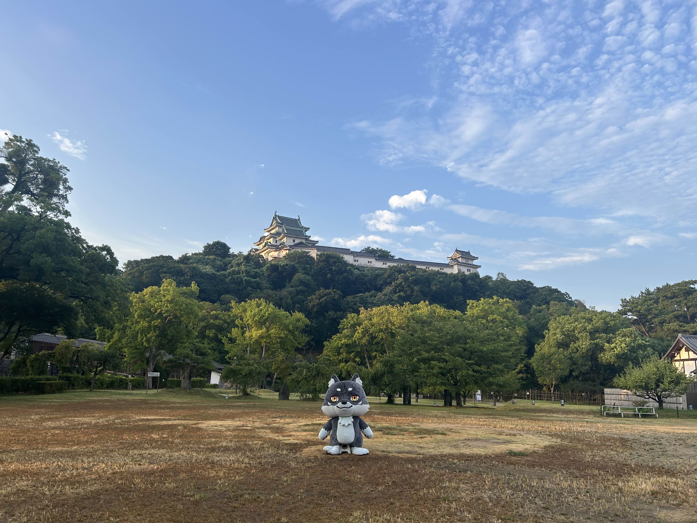

要点まとめ（最終更新：2025-08-09）
- 日本100名城進捗：38/100
- 最新登城：和歌山城
- 投票：『ゆるバース2025』受付中（下のボタンから）
- FAQ更新：「熱血キャラバンって何？」を追加
Makami’s “100 Japanese Castles” challenge: 38/100 completed as of 2025-08-09.
100名城チャレンジ進捗 38 / 100（38%）
訪問履歴
訪問マップ
都道府県カバー率
--/47
(--%)
地図をポチッ！
行ったお城がズラッと出るよ🐺🏯
行ったお城がズラッと出るよ🐺🏯
フォトギャラリー
よくある質問
Q. 熱血キャラバンって何ですか？
A. マカミが日本100名城の現地を実際に巡り、登城記録と写真を日々公開しながら 『ゆるバース2025』の応援を呼びかけるロードトリップ企画です。 進捗は「城壁カウントダウン」とタイムラインで更新、投票は「ゆるナビ」から行えます。
Q. いまの登城進捗は？
A. 38/100 です（2025-08-09 更新）。
Q. 最新の訪問先は？
A. 和歌山の 和歌山城（No.62） です。